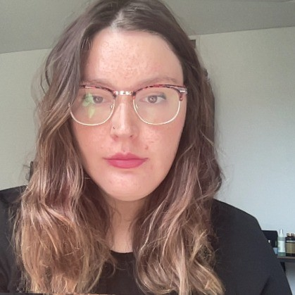

About Me
Hi, I'm Claude - it's only Claudia if you're my parents or the government! I do quite a lot of things apart from goof around on the internet - here's where I put some of these things.
I used to call myself a "computational chemist" back in the day, but I've hung up my research hat after I completed my PhD in 2024. I now work as a data scientist for the Australian government, where I wear a lot of different hats such as an award winning PowerBI developer, a non-award winning but still ok programmer, and a very terrible Excel user.